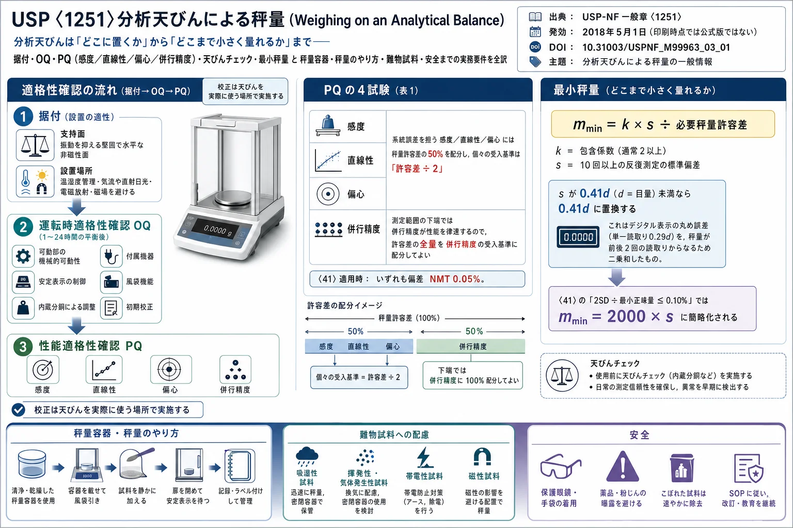

USP〈1251〉分析天びんによる秤量（Weighing on an Analytical Balance）

<!-- 方針: ほぼ全訳＋必要に応じた補足。原文（英語・USP-NF 一般章）の節構成に沿って訳出。原本PDFはテキスト層を持たない（本文がベクター描画）ため、PyMuPDFで全6ページを画像化し内容を読み取って訳出した。図版は無く、表1（推奨性能試験と受入基準）と補助情報の連絡先表のみ（埋め込み画像3点/頁はいずれもUSPロゴと「NO LONGER OFFICIAL」透かしで、実質的な図ではない）。数式はKaTeXで再構成。「> 補足:」は訳者注。 -->
書誌情報
- 原題: 〈1251〉 WEIGHING ON AN ANALYTICAL BALANCE
- 出典: USP-NF（米国薬局方–国民医薬品集）一般章（General Chapter）
- 発効日（Official Date）: 2018年5月1日
- 状態: 取得した印刷版には "No Longer Official"（現行の公式版ではない） の表示あり。最新の収載は Pharmacopeial Forum Volume No. 50(5)
- DOI: 10.31003/USPNF_M99963_03_01
- 担当専門委員会: GCPALDS2025 Pharmaceutical Analysis Lifecycle and Data Science（医薬品分析のライフサイクルとデータサイエンス）
- 著作権: © USPC（United States Pharmacopeial Convention）
補足: USP〈1251〉 は、米国薬局方の「一般章（General Chapter）」のうち番号が1000番台のもの、すなわち 情報提供的（informational）な章 である。1000番未満の章（例：〈41〉Balances）が試験・規格として 強制力をもつ のに対し、1000番台は「推奨・解説」の位置づけで、直接の適合義務は課されない。本章はその情報章として、分析天びんの据付から日常運用までの実務を体系的にまとめている。 本ページで頻出する 〈41〉Balances は、これに対して強制力のある章で、「正確に量る（accurately weighed）」ことを要求される材料に用いる天びんの要件（併行精度と正確さ）を定める。本章の受入基準の多くが「〈41〉が適用される場合は…」という条件つきで書かれているのはこのためである。 なお本ページの底本は USP-NF オンラインの印刷出力（© USPC、"Do not distribute" 表示あり）であり、公式・正文はあくまで USP が公開する英語原文である。本ページは日本語での理解を助ける私的な解説訳として作成した。実務判断には必ず現行の公式版を参照されたい。
用語の整理（訳者による前置き）
- 天びん（balance）＝本章の対象。特に 分析天びん（analytical balance）＝高分解能の実験室用電子天びん。
- 適格性確認（Qualification）＝機器が意図した用途に適することを文書で確認する一連の作業。OQ（Operational Qualification、運転時適格性確認）／PQ（Performance Qualification、性能適格性確認）。
- 秤量許容差（weighing tolerance）＝規格・法規等が許す、量るべき量の目標値からの最大許容偏差。本章の受入基準はすべてこれを基準に決まる。
- 感度（sensitivity）／直線性（linearity）／偏心（eccentricity）／併行精度（repeatability）＝PQで評価する4特性。前3者が 系統誤差（systematic deviation） を、併行精度が ばらつき を担う。
- 最小秤量（minimum weight, $m_{\min}$）＝必要な秤量許容差を満たせなくなる下限の正味試料量。これを下回る量は量ってはならない。
- 目量（scale interval, $d$）＝デジタル表示の最小刻み。包含係数（coverage factor, $k$）＝不確かさを拡張する係数（通常2以上）。
- NMT＝not more than（〜以下）。NLT＝not less than（〜以上）。
- 秤量容器（receiver）＝試料を載せる皿・舟・容器の総称。風袋（tare）＝容器の重さを差し引く操作・その容器。
〈1251〉分析天びんによる秤量
はじめに（INTRODUCTION）
秤量は分析手順において頻繁に行われる工程であり、天びんは実験室機器の不可欠な一つである。ここに述べる一般情報は、分析手順で使用される電子天びん に直接適用される。本章の多くの部分はすべての天びんに適用できるが、一部は分析天びんにのみ適用される。
本章は網羅的とみなすべきではなく、分析者が秤量操作を行い、又は秤量手順を実施する際には、他の情報源（例：米国国立標準技術研究所〈US National Institute of Science and Technology〉や天びん製造業者）も有用かつ適用可能でありうる。本章に示す情報は、**正確に量ることを要求される材料に用いる天びん（Balances〈41〉参照）だけでなく、すべての分析手順で用いる天びんにも当てはまる**。
補足: 冒頭のこの一文が本章の適用範囲を決めている。〈41〉は「accurately weighed（正確に量る）」と指示された場合の天びん要件を定める強制規定だが、〈1251〉はそれに限らず、日常のあらゆる秤量に及ぶ。つまり「正確に量れ」と書かれていない場面の秤量にも、本章の考え方は適用してよい（すべき）ということ。
適格性確認（QUALIFICATION）
利用者は、適格性確認の計画を立てる際、Analytical Instrument Qualification〈1058〉（分析機器の適格性確認）、標準作業手順書（SOP）、および製造業者の推奨事項を参照すべきである。
据付（Installation）
天びんの性能は、それが据え付けられる施設の条件に依存する。分析者は天びんを据え付ける前に、製造業者が提供する情報を参照すべきである。
支持面（SUPPORT SURFACE）
天びんは、振動の伝達を最小化する、堅固で水平な非磁性の面（例：床置きの花崗岩製秤量台）に据え付けるべきである。金属製の支持面を用いる場合は、静電気の蓄積を防ぐため、その面を接地（アース）すべき である。
設置場所（LOCATION）
可能であれば、天びんは 温度・湿度が管理された部屋 に設置すべきである。設置場所には清浄で安定した電源が供給されているべきである。設置場所は気流のない場所とし、オーブン・炉・空調ダクト・機器やコンピュータの冷却ファンの近くであってはならない。天びんには 直射日光が当たらないよう、外窓から離して 配置すべきである。天びんは、電磁放射源（高周波発生器・電動モーター・携帯型通信機器〈コードレス電話・携帯電話・トランシーバーを含む〉など）の近くに据え付けるべきではない。また、実験室の分析機器その他の装置によって誘導される 磁場 の近くに設置してはならない。
天びんの性能は、据付後かつ使用前に評価 し、十分な性能を示すことを実証すべきである。状況によっては、天びんを最適な環境に配置することが不可能な場合もある。施設側の問題となりうる例には次のものがある。
- 実験室に気流が存在することがある。
- 実験室の温度変動が過大である（温度感度について製造業者の文献を確認すること）。
- 湿度が極端に低いか極端に高い。いずれの状態でも、水分の吸収・喪失によって試料重量が変動する速度が増しうる。低湿度は静電気の蓄積を増大させる。
- 隣接する作業が振動を生じさせている。
- 腐食性物質が近くで使用され、又は日常的に秤量されている。
- 腐食性物質・危険物を量るために、天びんがドラフトチャンバー（フューム フード）内に設置されている。
- 天びんが磁場を発生する装置（例：マグネチックスターラー）に隣接している。
- 直射日光が天びんに当たっている。
振動・気流・電磁放射・磁場、又は温湿度の変化を誘発する機器やシステムの近くに天びんが設置されている場合、それらのシステムを稼働させた状態で評価を行い、最悪条件（worst-case scenario）を再現すべき である。
運転時適格性確認（Operational Qualification, OQ）
機器の据付後、OQは利用者又は資格のある第三者ベンダーのいずれかが実施すべきである。
最低限、使用前に電源を投入し、製造業者の指示に従って天びんを平衡させる（天びんの種類により1〜24時間） 必要がある。天びんに応じて、分析者はOQに次の手順を含めるべきである。
- すべての可動部の機械的可動性
- 安定表示の制御
- 内蔵分銅による手動トリガー又は自動の調整
- 付属機器の動作
- 風袋（タール）機能
- 初期校正
電子分析天びんのいくつかの型式は、手動トリガー又は自動の調整のために 内蔵分銅 を用いる。この調整は通常、経時的な天びんのドリフト の低減と、周囲温度の変動に起因するドリフト の補償のために適用される。
校正は通常OQの一環として実施されるが、その後も定期的に実施できる。校正は、天びんが通常の運用で使用される場所で実施すべき である。
性能適格性確認（Performance Qualification, PQ）
表1は、PQにおいて評価すべき最も重要な天びん特性の一覧である。用途のリスクと必要な秤量プロセス許容差に応じて、これらの試験の一部は省略できる。また、当該特性が秤量性能にごくわずかしか影響しないという根拠がある場合も、試験は省略できる。用いる手順はいずれも、社内のSOPと整合し、当該天びんに適用可能で、かつ十分に正当化されるべきである。PQはSOPに記載のとおり定期的に実施すべきであり、個々の試験の頻度は、その特性の重要度に応じて異なってよい。
試験に用いる分銅は、汚染を最小化する方法で保管・取り扱う べきである。試験の実施前に、技術者は分銅を天びんの近くに適切な時間置き、十分な熱平衡に達させるべきである。可能であれば、取扱い誤差を最小化するため単一の試験分銅で試験を行うべき だが、複数の試験分銅を用いることも許容される。
試験は、天びんの性能追跡と、必要に応じた実験室の調査（investigation）の支援 に容易に使えるようデータを記録すべきである。意味のある受入基準は、必要な秤量許容差——すなわち、量るべき量について規格・法規等が許す目標値からの最大許容偏差——に応じて設定できる。試験結果が許容範囲外となった場合に対処し、天びんの清浄度と環境が結果に影響していないことを保証する手順 を整えておくべきである。また、観測結果が許容範囲を外れた場合に天びんを運用から外す手順 も整えておくべきである。
表1 推奨性能試験と受入基準（Suggested Performance Tests and Acceptance Criteria）
| 特性（Property） | 定義（Definition） | 例（Examples） | 受入基準（Acceptance Criteria） |
|---|---|---|---|
| 感度（Sensitivity） | 表示値の変化を、その変化を生じさせた天びん上の荷重で割ったもの。 | 試験荷重は天びんの容量と等しいか、十分に近い値。 | 〈41〉が適用される場合、1（正しく調整された天びんの感度）からの偏差が NMT 0.05%。その他の用途では、それぞれの許容差要求を2で割った値。 |
| 直線性（Linearity） | 荷重と表示秤量値との間の直線関係に、天びんが追従する能力。非直線性は通常、試験区間内の直線性偏差の最大値として表される。 | 天びんの範囲にわたって3〜6点。 | 〈41〉が適用される場合、偏差が NMT 0.05%。その他の用途では、それぞれの許容差要求を2で割った値。 |
| 偏心（Eccentricity） | 偏心荷重によって生じる測定値の偏差。すなわち、荷重の重心が荷重受け（ロードレシーバ）に対して非対称に置かれることによる偏差。偏心は通常、所与の試験荷重における、中心から外れた位置での読みと中心での読みとの差の最大値として表される。 | 重心位置と4つの象限（長方形の皿の場合）、又は他の皿形状では類似の位置で実施。試験荷重は通常、天びん容量の30%以上 とすべき（上限の可能性については製造業者のマニュアルを参照）。 | 〈41〉が適用される場合、偏差が NMT 0.05%。その他の用途では、それぞれの許容差要求を2で割った値。 |
| 併行精度（Repeatability） | 同一の対象を同一条件下（同一測定手順・同一操作者・同一測定システム・同一運転条件・短期間における同一場所）で繰り返し秤量したときに、計量器が同一の測定値を表示する能力。併行精度は通常、複数回秤量の標準偏差として表される。 | 10回の反復秤量（天びんの公称容量の数パーセントの試験分銅を使用）。 | 該当する場合は 〈41〉の要求。その他の用途では、利用者が指定する要求 が適用される。 |
感度・直線性・偏心はいずれも 系統誤差（systematic deviations） を説明するものである。すなわち、これらは天びんの 正確さ（accuracy） を制限する（Validation of Compendial Procedures〈1225〉および ICH Q2 における正確さの定義に基づく）。国際計量計測用語（VIM）や国際標準化機構（ISO）の文書では、この概念は 真度（trueness） と呼ばれる。
これらの偏差は互いにおおむね独立であるため、すべての偏差が同時に発生し、かつ同じ符号をもつ可能性は低い。したがって、天びんの正確さを評価するために個々の偏差を 算術的に加算 するのは、かなり保守的なアプローチとなる。個々の偏差の 二乗和（quadratic addition） の方がより現実的なアプローチである。
秤量許容差の予算（budget）の50%を、個々の特性（感度・直線性・偏心）の受入基準に配分することで、分析者は必要な秤量許容差の遵守を確保する。 したがって、系統誤差を説明する個々の特性の受入基準は、秤量許容差を2で割った値 に設定される。これらの特性——又はその一部——は、〈41〉に記載された正確さ要求を満たすためにも用いることができる。この場合、受入基準は感度・直線性・偏心について 最大0.05%の偏差 を許容する。
併行精度は、天びん容量の数パーセントの試験分銅で試験することが望ましい。 測定範囲の下端では、実験室用天びんの性能は 有限な併行精度によって律速 され、系統誤差による制限は通常無視できる。したがって、秤量許容差の予算の全量を、併行精度試験の受入基準に配分できる。
補足: ここが本章の統計的な要である。系統誤差（感度・直線性・偏心）は「許容差の半分」に、ばらつき（併行精度）は「許容差の全部」に配分する——という配分の使い分けは、測定範囲のどこで量るか で効いてくる。容量近くの大きな量を量るときは系統誤差が効くので「許容差÷2」で縛り、下端の微量を量るときは併行精度が支配的なので許容差を全部そちらに回してよい、という設計思想である。
上記の感度試験および直線性試験について、分析者は 適切な分銅等級の認証分銅 を使用すべきである（例：国際法定計量機関〈OIML〉R111 又は 米国材料試験協会〈ASTM〉E617 による。それぞれ www.oiml.org、www.astm.org から入手可能）。［注：直線性試験に差分法（differential method）を用いる場合、認証分銅は必ずしも必要とされない。］
受入基準によっては、試験分銅の公称値のみを考慮すれば十分な場合がある。試験分銅の公称値を考慮する場合、分析者は 最大許容誤差が受入基準の1/3を超えない ことを確認すべきである。あるいは、試験分銅の認証値を考慮する場合、その 校正不確かさが受入基準の1/3を超えない べきである。複数の分銅 を用いて試験を行う場合は、それらの分銅の 校正不確かさを合算 しなければならず、その合計が受入基準の1/3を超えないべきである。偏心や併行精度のような試験については、認証分銅の使用は任意であるが、分析者は 試験中に分銅の質量が変化しないことを確実にしなければならない。
上記の試験は、適用されるcGMP要求を満たすために、正式な定期校正に含めることもできる。
天びんチェック（Balance Checks）
外部分銅を用いた天びんチェック は、天びんが秤量許容差の要求を満たしていることの確認に役立つ。天びんチェックは、適用されるSOPに基づき適切な間隔で実施される。天びんチェックの頻度は、用途のリスクと必要な秤量許容差 に依存する。
外部分銅によるチェックは、内蔵分銅による自動又は手動トリガーの調整によって部分的に代替できる。分析者が外部分銅で天びんチェックを行う場合、上記の感度試験で述べたのと同じ受入基準が適用されうる。
最小秤量（Minimum Weight）
分析天びんの 最小正味試料量——略して 最小秤量 $m_{\min}$——は、次式で表せる。
$$m_{\min} = \frac{k \times s}{\text{必要秤量許容差}}$$
ここで $k$ は 包含係数（coverage factor、通常2以上）、$s$ は試験分銅の 10回以上（NLT 10）の反復測定の標準偏差（質量単位、例：mg）である。
得られた標準偏差が $0.41d$（$d$ は目量）未満の場合、標準偏差は $0.41d$ に置き換える。標準偏差の下限 $0.41d$ は、計量器のデジタル表示の丸め誤差 に由来する。単一の読取りに割り当てられる丸め誤差は $0.29d$ と計算される。秤量は常に2回の読取り——試料を皿に載せる前と載せた後（又は取り除く前後）——からなり、2つの表示値の差が正味試料量となることに注意されたい。2つの個別の丸め誤差は通常 二乗和的に加算 され、$0.41d$ となる。なお、風袋容器を皿に載せた後に機器を風袋引きしても、ゼロ表示もまた丸められる ため、丸め誤差には影響しない。
最小秤量は、必要な秤量許容差が守られなくなる天びんの下限値を表す。 上式は、測定範囲の下端における分析天びんの性能が 有限な併行精度によって制限される ことを考慮している。
正確に量ることを要求される材料について、〈41〉は「秤量値の標準偏差の2倍を、望まれる最小正味量（利用者がその天びんで使用する予定の最小正味量）で割った値が 0.10% を超えなければ、併行精度は満足である」と規定 している。この基準に対して、上式は次のように簡略化される。
$$m_{\min} = 2000 \times s$$
得られた標準偏差が $0.41d$（$d$ は目量）未満の場合、標準偏差は $0.41d$ に置き換えられる。
〈41〉の要求の対象でない場合、最小秤量の値は、必要な秤量許容差とその天びんの具体的な使い方に応じて変わりうる。
取扱いを容易にするため、併行精度試験に用いる試験分銅は最小秤量の値である必要はなく、それより大きくてもよい。併行精度の標準偏差は試験分銅の値の弱い関数にすぎないからである。
必要な秤量許容差を満たすため、試料を量る際には 試料の質量（すなわち正味量）が最小秤量と等しいか、それより大きくなければならない。最小秤量は試料の重量に適用され、風袋や総重量には適用されない。
天びんの使用中に併行精度に影響を与えうる要因には、次のものがある。
- 天びんの性能——したがって最小秤量——は、環境条件の変化により経時的に変動しうる。
- 操作者が異なれば秤量の仕方も異なりうる。すなわち、異なる操作者が決定した最小秤量は異なりうる。
- 有限回の反復秤量の標準偏差は、真の標準偏差（未知）の推定値にすぎない。
- 試験分銅による最小秤量の決定は、実際の秤量用途を完全に代表しているとは限らない。
- 風袋容器 もまた、環境と風袋容器表面との相互作用により、最小秤量に影響を与えうる。
これらの理由から、可能な場合は 最小秤量より大きい値で秤量を行うべき である。すなわち、利用者がその天びんで使用する予定の最小正味量は、最小秤量より大きくすべきである。
補足: 最小秤量は、この分野で最も実務に直結する概念である。要点は3つ——①式の分子は「不確かさ（$k \cdot s$）」、分母は「許してよい相対誤差」。必要な精度が厳しいほど、量ってよい最小量は大きくなる。②$0.41d$ の下限は、どんなに天びんが良くても デジタル表示の丸めが効く ことによる物理的な床。③〈41〉の $m_{\min} = 2000 \times s$ は、$k=2$・許容差 $0.10\%$（＝0.001）を代入した $2s/0.001$ そのもの。別掲の「製薬産業における『はかり（天びん）』の計量ベストプラクティス（NPL Good Practice Guide No.70）」が扱う USP Monograph 41 の「3×SD÷秤量値 ≤ 0.001」判定と、同じ思想を別の書き方で表したものと理解するとよい。
分析天びんの運用（OPERATION OF THE ANALYTICAL BALANCE）
必要な量と性能に合った適切な天びんを選択すること。一般章〈41〉は、正確に量ることを要求される材料に用いる天びんの要求を規定している。天びんの使用者は、使用前に 天びんの環境（振動・気流・清浄度）と校正の状態 を確認すべきである。
秤量容器（Receivers）
試料の重量測定において適切な性能を確保するため、分析者は その材料に適した秤量容器の選択 を検討すべきである。
一般的特徴（GENERAL CHARACTERISTICS）
すべての秤量容器は 清浄・乾燥・不活性 でなければならない。秤量容器と試料の総重量が、天びんの最大容量を超えてはならない。
適切に維持・調整された実験室用天びんでは、小さな試料——すなわち、典型的には天びん容量の数パーセントを超えない質量の正味量——の 秤量不確かさは、本質的に併行精度によって決まる。しかし、併行精度は 秤量される対象の大きさと表面積に依存 する。このため、大きい又は重い秤量容器は、秤量容器を考慮せずに併行精度が決定された条件からの逸脱をもたらす。
したがって、質量が小さく表面積の小さい秤量容器を用いる（特に軽量の試料を測定する場合）か、秤量容器を秤量皿にプリロードとして載せた状態で併行精度試験を実施する かのいずれかとすべきである。
秤量容器は、電子天びん部品への磁気的干渉を防ぐため非磁性材料 で作られるべきである。秤量容器は、秤量室内の気流の発生を防ぐため、周囲温度で使用 すべきである。
固体試料（SOLID SAMPLES）
固体材料を秤量するための容器には、秤量紙・秤量皿（weighing dish）・秤量ファネル（weighing funnel）、又はボトル・バイアル・フラスコを含む密閉容器がある。吸湿性の紙は、観測結果に有害な影響を及ぼしうるため、秤量には推奨されない。
秤量皿は通常、ポリマー又はアルミニウム製である。静電気を保持する材料の測定用に、静電気防止（antistatic）秤量皿 が入手できる。秤量ファネルは通常ガラス又はポリマー製である。この型の容器の設計は、秤量皿と移送ファネルの属性を組み合わせたもので、秤量した粉体を容量フラスコのような細口容器へ分析的に移送する作業を簡略化 できる。
揮発性又は潮解性の固体試料については、分析者は 密閉容器の中に材料を量り取らなければならない。実務上可能な場合、分析者は、揮発による試料重量の損失や、大気中の水分の吸着・吸収による重量増加を減らすため、開口部の小さい密閉容器を使用 すべきである。
液体試料（LIQUID SAMPLES）
液体試料の秤量容器は通常、不活性な密閉容器である。揮発性又は潮解性の液体試料については、分析者は 開口部の小さい密閉容器 を使用し、材料の移送後は 速やかに封をし直す べきである。
秤量容器と封（enclosure）が 液体試料と適合する材料 で作られていることを確実にするため、特別な注意を払うべきである。秤量容器と封は、低粘度・低表面張力・低沸点の液体からの漏れを防ぐのに十分なシール を備えていなければならない。
秤量の種類（Types of Weighing）
定量分析のための秤量（WEIGHING FOR QUANTITATIVE ANALYSIS）
多くの定量分析の最初の工程は、指定された量の試料を正確に量ること である。General Notices（総則）6.50.20 Solutions は、定量測定のための溶液は 正確に量られた分析対象物を用いて調製しなければならない と規定している。すなわち、分析者は 〈41〉の基準を満たす天びんを使用しなければならない。試料の秤量中に導入された誤差は、その後のすべての分析測定の正確さに影響しうる。
添加秤量（ADDITION WEIGHING）
添加秤量は通常、固体試料、又は揮発性が問題とならない液体試料 に用いられる。秤量容器を天びんに載せる。天びんの表示が安定した後、分析者は次を行うべきである——天びんを風袋引きする／所望の量の材料を秤量容器に加える／天びんの表示を安定させる／重量を記録する／材料を適切な容器へ定量的に移送する。全量が移送されたことを保証できない場合は、秤量容器を再度秤量して重量差を記録する。
分注秤量（DISPENSE WEIGHING）
分注秤量は通常、乳剤や、軟膏のような粘性液体 の秤量に用いられる。こうした状況では、材料を通常の秤量容器に量り入れることが現実的でない。したがって分析者は次を行うべきである——天びんを風袋引きする／外側を清拭した適切な容器（例：ボトル・チューブ・移送ピペット・シリンジ）に入れた試料を天びんに載せる／天びんの表示が安定した後に重量を記録する／所望量の試料を適切な受け容器（例：容量フラスコ）へ移送する／ピペット又はシリンジを天びんに戻す。この2回の秤量の差が、移送された試料の重量に等しい。
重量式ドージング（GRAVIMETRIC DOSING）
重量式ドージングは通常、試料・標準の調製やカプセル充填 に用いられる。このような秤量のために、分析者は容量フラスコ・バイアル・カプセル殻を天びんに載せ、天びんの表示が安定した後に風袋引きし、ドージングユニットによって固体又は液体成分を容器に加え、それぞれの重量を記録する。
難物試料（Problem Samples）
帯電した試料と秤量容器（ELECTRICALLY CHARGED SAMPLES AND RECEIVERS）
乾燥した微細な粉体は静電気を帯びることがあり、その粉体が秤量容器や天びんに 引きつけられたり反発されたり して、不正確な重量測定や移送中の試料損失を招く。天びんの読みのドリフト は、材料が静電気を帯びている可能性を操作者に警告するものである。
この問題の解決には、静電気除去装置を内蔵した市販の天びん を使用できる。そのような装置は、圧電素子 や、ごく微量の放射性元素（通常はポロニウム） を用いてイオン流を発生させ、秤量される粉体の上を通過させて静電荷を散逸させる。静電気防止の秤量ボート・除電ガン・除電スクリーン も市販されている。
静電荷は 実験室の相対湿度 にも依存し、それはまた大気条件に依存する。特定の条件下では、操作者が着用する衣類 によって静電荷が生じ、この電荷が秤量に大きな誤差を引き起こしうる。ホウケイ酸ガラス製品やプラスチック製の秤量容器は、特に低相対湿度において静電荷を拾いやすいことがよく知られている。 操作者保護に用いる 手袋 もまた、静電荷の問題を増大させる可能性がある。容器を金属製ホルダーに入れると静電荷を遮蔽するのに役立つ ことがあり、静電気防止手袋 も問題の緩和に役立ちうる。
揮発性試料（VOLATILE SAMPLES）
沸点の低い液体を量る際、分析者は 小口径の気密な封を備えた容器 に試料を受け取らなければならない。分析者はその後、容器と封を風袋引きし、所望量の試料を加え、封をし直す。天びんの表示が安定した後、分析者は試料の重量を記録する。
温かい試料・冷たい試料（WARM OR COOL SAMPLES）
温かい、又は冷たい試料は 実験室内で平衡させるべき であり、そうしないと重量の読みが誤りうる。温かい試料については、熱対流のため見かけの重量が真の重量より小さくなる。例えば、周囲の空気より温かいフラスコはその空気を温め、温まった空気はフラスコに沿って上昇し、粘性摩擦によって内容物の見かけの重量を減らす。
吸湿性試料（HYGROSCOPIC SAMPLES）
吸湿性物質は大気中の水分を容易に吸収し、露出したままにすると着実に重量が増加する。したがって吸湿性試料は、速やかに秤量する か、気密な封を備えた容器に入れる かのいずれかとしなければならない。気密容器の場合、分析者は容器と封を風袋引きし、所望量の試料を加え、封をし直すべきである。天びんの表示が安定した後、分析者は試料の重量を記録できる。
無菌試料・バイオハザード試料（ASEPTIC OR BIOHAZARDOUS SAMPLES）
無菌又は生物学的危害のある試料の秤量は、クリーンベンチ・バイオセーフティキャビネット・アイソレーター等の封じ込め装置の内部 で行うべきである。フード内の気流は天びんの不安定を引き起こしうる ため、フードの下に天びんを設置した後、分析者は 適切な分銅（weight artifact）を用いた厳密な適格性確認試験（〈41〉参照）を実施 し、その環境における天びん性能の許容性を判断すべきである。
腐食性物質の秤量（WEIGHING CORROSIVE MATERIALS）
塩類など多くの化学物質は腐食性であり、この種の材料は 天びんの皿の上や筐体内部にこぼしてはならない。この種の材料を秤量する際は特別な注意が不可欠である。分析者は、秤量瓶やシリンジのような密閉容器の使用 を検討すべきである。こぼれが生じた場合、こぼれた物質の性質によっては、天びんの再適格性確認（requalification）が必要となりうる。
秤量時の安全上の配慮（Safety Considerations When Weighing）
秤量中、分析者は 高濃度の純物質に曝露される可能性 がある。分析者は常にこの可能性を慎重に考慮し、秤量前に当該物質の 安全データシート（MSDS） に記載された注意事項に精通している必要がある。
危険物は、適切な空気ろ過を備えた囲い（エンクロージャー）内で取り扱うべき である。多くの毒性物質——場合によってはアレルギーを引き起こす物質——は、液体又は微細な粒子として存在する。これらの物質を秤量する際、分析者は 物質の吸入を防ぐため鼻と口を覆うマスク を使用し、皮膚への接触を防ぐため手袋 を使用すべきである。
［注：手袋の使用は、あらゆる化学物質を取り扱う際の good practice である。秤量対象の容器を扱う必要がある場合、分析者は 自己防護のためだけでなく、水分や皮脂が秤量容器に付着するのを防ぐためにも 手袋を着用すべきである。］
補足: 最後の注が地味に重要である。素手で秤量容器に触れると、指紋の皮脂や水分がそのまま重量として乗る——分析天びんの分解能（0.1 mg や 0.01 mg）ではこれが実測に効く。手袋は「作業者を守るため」だけでなく「測定を守るため」でもある、という指摘。
補助情報（Auxiliary Information）
USPへ問い合わせる前に、FAQで該当する質問を確認することが推奨されている。
| トピック／質問 | 連絡先 | 専門委員会 |
|---|---|---|
| 〈1251〉WEIGHING ON AN ANALYTICAL BALANCE | Yang Liu（Scientific Liaison） | GCPALDS2025 Pharmaceutical Analysis Lifecycle and Data Science |
| REFERENCE STANDARDS SUPPORT | RS Technical Services（RSTECH@usp.org） | GCPALDS2025 Pharmaceutical Analysis Lifecycle and Data Science |
- 最新の収載: Pharmacopeial Forum Volume No. 50(5)
- DOI: https://doi.org/10.31003/USPNF_M99963_03_01
補足: 本章を実務に落とすときの流れを一言でまとめると——「置き場所を決める → 据えたら性能を確かめる（OQ/PQ）→ 日々チェックする → “どこまで小さく量ってよいか（最小秤量）”を知る → 試料の性質に応じて容器と手順を選ぶ」。 特に押さえるべき数字は3つ。①PQの受入基準は「必要な秤量許容差 ÷ 2」（〈41〉適用時は感度・直線性・偏心とも NMT 0.05%）。②試験分銅の誤差・不確かさは受入基準の1/3以下（複数分銅なら合算して1/3以下）。③最小秤量 $m_{\min} = k \cdot s \div$ 必要秤量許容差、〈41〉なら $m_{\min} = 2000 \times s$、ただし $s$ の床は $0.41d$。 本サイトには関連文書として、英国NPLの「製薬産業における秤量ベストプラクティス（GPG No.70）」——USP Monograph 41 の最小秤量判定や不確かさバジェット（GUM準拠）をより詳しく扱う——も収録しているので、あわせて読むと理解が立体的になる。
参考文献
本章には文献リストが無いため、本文中で参照される USP-NF の章・外部文書を言及順に一覧化した。
- Balances〈41〉——正確に量ることを要求される材料に用いる天びんの要求（併行精度・正確さ）。本章の受入基準の多くが参照する。
- Analytical Instrument Qualification〈1058〉——分析機器の適格性確認。適格性確認計画の立案時に参照。
- Validation of Compendial Procedures〈1225〉および ICH Q2——正確さ（accuracy）の定義。
- General Notices（総則）6.50.20 Solutions——定量測定用の溶液は正確に量られた分析対象物で調製すること。
- OIML R111（国際法定計量機関）——分銅の等級。www.oiml.org
- ASTM E617（米国材料試験協会）——分銅の等級。www.astm.org
- VIM（国際計量計測用語）および ISO 文書——真度（trueness）の概念。